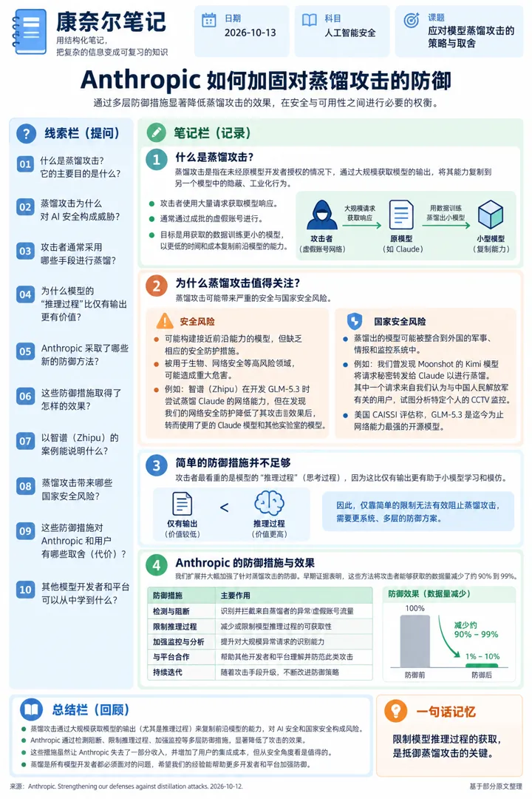
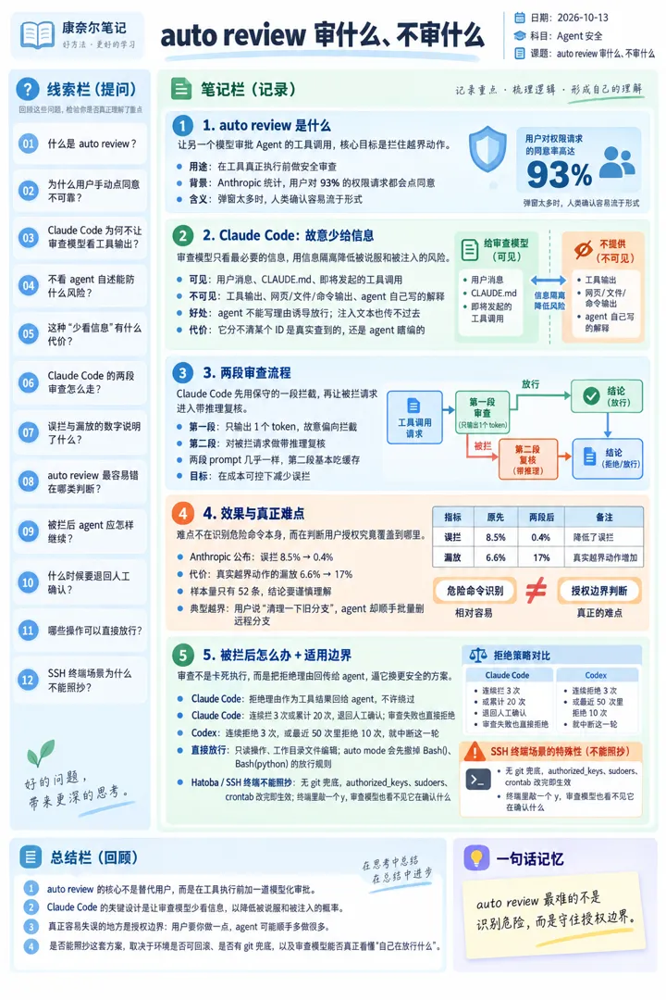
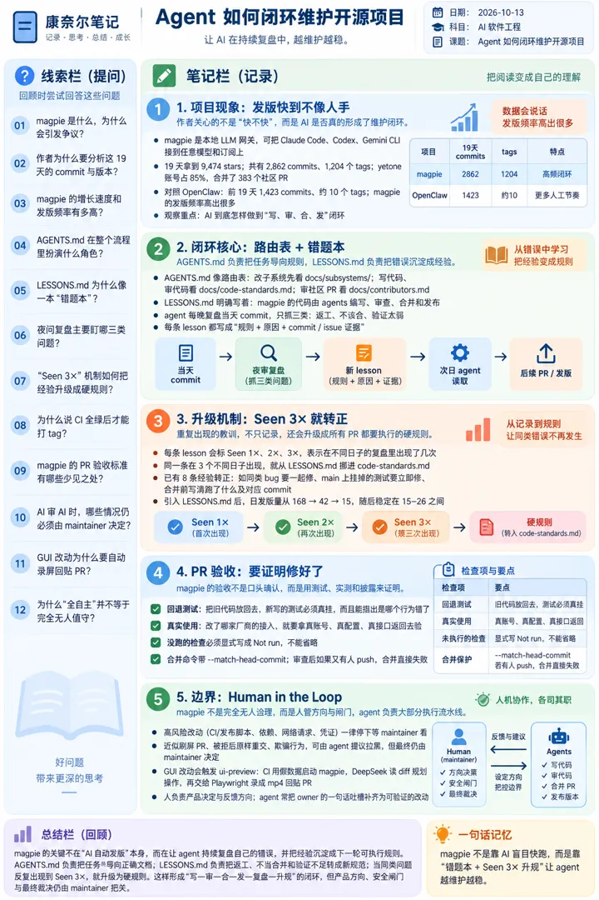
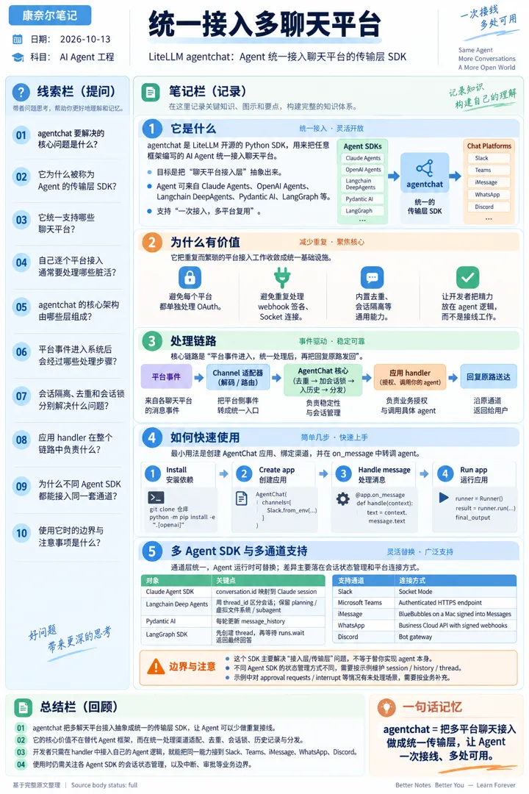
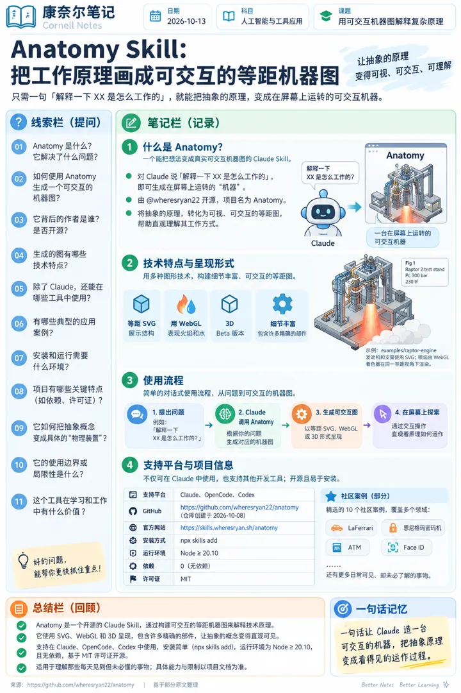
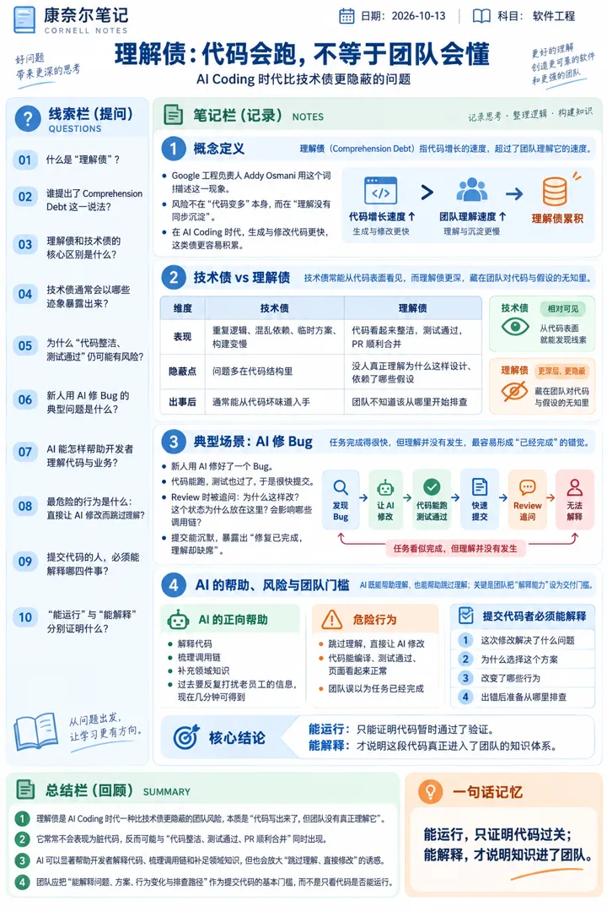

6 张技术海报
点海报看原图；每张右侧是 X 原帖信息（时间为美东 ET）。

#1 · X 原帖信息
Anthropic：加强对蒸馏攻击的防御（Strengthening our defenses against distillation attacks）
Anthropic @AnthropicAI
发帖时间：2026-10-12 19:58 ET
原帖：https://x.com/AnthropicAI/status/2109795898909950247
原文链接：https://www.anthropic.com/research/distillation-defenses
发帖时间：2026-10-12 19:58 ET
原帖：https://x.com/AnthropicAI/status/2109795898909950247
原文链接：https://www.anthropic.com/research/distillation-defenses
In recent months, we’ve made substantial progress on reducing the effectiveness of distillation attacks on Claude using new methods, as we outline in this blog. Early evidence suggests that these methods have reduced the amount of data harvested by distillers by around 90 to 99 percent. Distillation attacks are covert, industrial-scale campaigns to extract the capabilities of one model and replicate them in another, without the authorization of the original model’s developers. They are often conducted using networks of fraudulent accounts. These attacks allow companies to mimic frontier capabi…

#2 · X 原帖信息
Claude Code 与 Codex 的 auto review：让另一个模型审批 Agent 工具调用
KC @ScarletKc
发帖时间：2026-10-12 07:34 ET
原帖：https://x.com/ScarletKc/status/2109608712944152590
发帖时间：2026-10-12 07:34 ET
原帖：https://x.com/ScarletKc/status/2109608712944152590
最近在做 harness，研究了一圈 auto review，就是让另一个模型替你审批 agent 的工具调用。Anthropic 统计过，用户对 93% 的权限请求都点了同意，弹多了根本没人细看。 最反直觉的是 Claude Code 故意不让审查模型看工具输出，也不看 agent 自己写的话，只给它用户的消息、CLAUDE.md 和 agent 要发起的调用。这样 agent 没法写一段理由说服它放行，网页、文件和命令输出里藏的注入文本也传不到它那里。他们也试过把这些都给它看，在越界动作的测试集上表现反而变差了。代价是它分不清一个 ID 是 agent 查出来的还是瞎编的。Codex 的 reviewer 就能看到带工具输出的对话记录。 Claude Code 的审查还分两段。第一段只输出一个 token，故意偏向拦截，被拦下的再进第二段带推理复核。两段 prompt 几乎一样，第二段基本都吃缓存。Anthropic 公布的数字是误拦从 8.5% 降到 0.4%，代价是真实越界动作的漏放从 6.6% 涨到 17%，这组只有 52 条样本。 他们自己总结，危险命令其实认得出来，失误主要出在判断用户的授权覆盖到哪。用户说一句"清理一下旧分支"，agent 顺手把远程分支批量删了，就是典型的越界。 拦下来也不会卡住。拒绝理由作为工具结果回给 agent，让它换个更安全的做法，…

#3 · X 原帖信息
yetone 的魔法：magpie 是怎么让 AI 自己维护项目的
WquGuru @wquguru
发帖时间：2026-10-12 10:19 ET
原帖：https://x.com/wquguru/status/2109650264601117141
发帖时间：2026-10-12 10:19 ET
原帖：https://x.com/wquguru/status/2109650264601117141
yetone 的魔法：magpie 是怎么让 AI 自己维护项目的 关于全 AI 自动化构建软件该不该存在的问题，最近终于爆发了。起因是 @yetone 维护的 magpie，被同行喷“快餐式服务”、“不太敢用”。 相信大部分朋友已经有共识，“全 AI 自动化构建软件”是大势所趋，那么 magpie 是怎么实践的呢？我把 magpie 拉下来，分析了过去十来天的 2,862 个 commit，顺手拿 OpenClaw 做个对照。 19 天 1204 个版本 magpie 是个本地 LLM 网关，能把 Claude Code、Codex、Gemini CLI 这些编程 agent 接到任意模型和订阅上。9 月 22 日第一个 commit，到今天 19 天，9,474 星。2,862 个 commit 里 yetone 账号占 85%，合并了 383 个社区 PR。 tag 数（等同版本） 19 天高达 1,204 个，一天平均 60 多个版本，人手可发不出这个频率。对比之下，OpenClaw 头 19 天是 1,423 个 commit，99% 是 Peter Steinberger 自己提的，tag 大概 10 个。 magpie 的 commit 多了一倍，版本多了一百多倍。 我想搞清楚的就一件事：AI 在这个项目里到底是怎么闭环的。 一张路由表，一本错题本 magpie…

#4 · X 原帖信息
LiteLLM 开源 Agent 传输层 SDK：agentchat
meng shao @shao__meng
发帖时间：2026-10-12 21:31 ET
原帖：https://x.com/shao__meng/status/2109819186893766721
发帖时间：2026-10-12 21:31 ET
原帖：https://x.com/shao__meng/status/2109819186893766721
LiteLLM 把 Agent 传输层 SDK 开源了 agentchat 这个 Python SDK 让你可以用任意框架写的 AI Agent 统一接入 Slack、Teams、iMessage、WhatsApp、Discord 五个聊天平台。避免自己处理一遍 OAuth、webhook 签名、Socket 连接、去重、会话隔离这种接入工作。 架构：管道 + 协议 + 值对象 平台事件 → Channel 适配器（解码/路由）→ AgentChat 核心（去重→加会话锁→入历史→分发） → 应用 handler（授权、调用你的 agent）→ 回复原路送达 开源地址：https://t.co/J1NwU4SR0m --- GitHub: https://github.com/BerriAI/agentchat (repo created 2026-09-28) README: # agentchat a minimal sdk to connect your agents to slack, teams, imessage, whatsapp. use any SDK (Claude Agents, OpenAI Agents, Langchain DeepAgents, Pydantic Agents) and instantly connect it to all…

#5 · X 原帖信息
Anatomy：把「XX 是怎么工作的」画成可交互等距机器图的 Agent Skill
nicekate @nicekate8888
发帖时间：2026-10-12 11:17 ET
原帖：https://x.com/nicekate8888/status/2109664640682889435
发帖时间：2026-10-12 11:17 ET
原帖：https://x.com/nicekate8888/status/2109664640682889435
只要对 Claude 说一句「解释一下 XX 是怎么工作的」，它就能把工作原理做成一台在屏幕上运转的「机器」。 背后是 @wheresryan22 开源的 Agent Skill：Anatomy。 用可交互的等距 SVG 展示结构，用 WebGL 表现火焰和水，还有 3D Beta 版本。原本抽象的原理，现在可以直观看它如何运作。 也支持在 OpenCode、Codex 中使用。 我精选了 10 个社区案例：LaFerrari、恩尼格玛密码机、ATM、Face ID……看看那些每天见到、却未必懂的东西，到底是怎么工作的。👇 --- GitHub: https://github.com/wheresryan22/anatomy (repo created 2026-10-08) README: <h1 align="center">Anatomy</h1> <p align="center"><b>A Claude skill that explains an idea by building it as a real, working object.</b><br>Also runs in OpenCode and Codex.<br>Crafted, interactive isometric figures with many small precise parts…

#6 · X 原帖信息
AI Coding 时代比技术债更隐蔽的问题：理解债（Comprehension Debt）
uudon @uudonX
发帖时间：2026-10-12 18:42 ET
原帖：https://x.com/uudonX/status/2109776626733224069
发帖时间：2026-10-12 18:42 ET
原帖：https://x.com/uudonX/status/2109776626733224069
AI Coding 时代，一个比技术债更隐蔽的问题：理解债 Google 工程负责人 Addy Osmani 把这种现象称为 Comprehension Debt，可以翻译成“理解债”：代码增长的速度，超过了团队理解它的速度。 技术债通常能在代码里看到：重复逻辑、混乱依赖、临时方案、越来越慢的构建。 理解债藏得更深。代码可能很整洁，测试全部通过，PR 也顺利合并，但团队里没有人真正理解它为什么这样设计、依赖了哪些假设，以及出问题后该从哪里开始排查。 最近遇到一件挺典型的事。 新人用 AI 修好了一个 Bug。代码能跑，测试也过了，很快就提交了。 Review 时问他：为什么这样改？这个状态为什么放在这里？会影响哪些调用链？ 他沉默了。 新人可以让 AI 解释代码、梳理调用链、补充领域知识，过去需要反复打扰老员工的信息，现在几分钟就能得到。 但还存在一种危险的行为： 开发者可以跳过理解，直接让 AI 修改。代码能编译、测试能通过、页面看起来正常，于是所有人都产生了“任务已经完成”的错觉。 任务确实完成了，理解却没有发生。 提交代码的人，必须能够解释这次修改解决了什么问题、为什么选择这个方案、改变了哪些行为，以及出错后准备从哪里排查。 能运行，只能证明代码暂时通过了验证。 能解释，才说明这段代码真正进入了团队的知识体系。
王玮的 X 海报日报 · 每天从 X 推荐流挑技术帖，用 ChatGPT 生成康奈尔笔记海报 · 每张都附 X 原帖信息 · 风格改编自 VitePress（MIT）